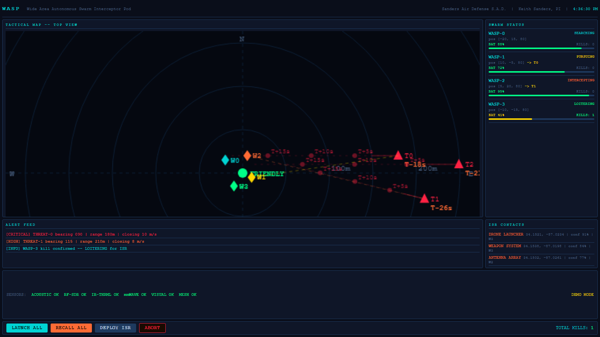

Live and interactive. Select a threat, hold its intercept, or press and hold Abort.
Open full screen → Product site →
Sheet 1 of 21 · Redesign · working prototype
Ground station for an autonomous swarm
WASP is a counter-drone system I founded a company to build. Its interceptors decide for themselves which threat to chase. The operator's job is to supervise, and to stop the system when it is wrong. My first display did not help with either.
- Role
- Sole designer and builder
- Scope
- Expert review, redesign, coded prototype
- When
- v1 spring 2026 · v2 October 2026
- Status
- Concept. Simulated data. Not yet tested with operators.
The prototype
Where it started
I built version 1 as a demonstration for capability briefs. It did that job: it showed swarm status, threat tracks and alerts on one screen. It is also the image on the company website today.
When I went back to it as a designer instead of as the engineer who needed a demo, I ran a heuristic review against Nielsen's ten usability heuristics and marked everything that would slow down or mislead someone watching it under time pressure.

1 2 3 4 5 6 7| Finding | Why it matters | Severity | |
|---|---|---|---|
| 1 | Track labels collide where threats converge. Time markers, range labels and the word FRIENDLY print on top of each other. | The display is least readable exactly where the operator most needs to read it. | Major |
| 2 | Abort sits in the same row as Launch and Recall, the same size, one button away, with no guard. | The one action that cannot be undone is as easy to hit as the routine ones. Error prevention. | Major |
| 3 | Interceptor state is a colour-coded word in small capitals. Hostile and critical are both red on dark navy. | About one man in twelve has a colour vision deficiency. Low-contrast red is also the first thing lost in glare. | Major |
| 4 | The alert feed is a log in arrival order. It reports bearing, range and closing speed, and leaves the arithmetic to the reader. | The operator's real question is how long they have. Recognition over recall. | Major |
| 5 | Each interceptor shows raw coordinates and a kill counter with the same weight as battery. | Position vectors mean nothing at a glance. They crowd out the one figure that limits the mission. | Minor |
| 6 | A full-width panel holds one line of sensor status. The alert feed above it is cramped into three rows. | Space goes to the thing that rarely changes. | Minor |
| 7 | The only sign that this is a simulation is a small amber label in the corner. | Mistaking a drill for live, or live for a drill, is the worst mode error this screen can produce. | Major |
Reframing
Version 1 was organised around the system: here are my drones, here is my map, here are my logs. An operator supervising autonomy needs it organised around a decision. I wrote that decision down as three questions and gave each one a fixed place on the screen.
- What arrives first? A threat queue sorted by seconds to the perimeter, with the time as the largest number on each row.
- Is something handling it? Each threat row states its pairing in a sentence: "W2 intercepting, 6 s to contact", or "Waiting for a free interceptor".
- Do I need to step in? One control per threat to hold the intercept, and one guarded control to stop everything.
The top bar answers the first two questions in a single line of plain language, so a glance is enough.
Key decisions
Shape first, colour second
Hostile tracks are diamonds and interceptors are circles, borrowing the frame-shape convention from military map symbology. A held track turns hollow with a dashed outline. A recharging interceptor turns hollow too. Every state reads in greyscale.
Labels only where you are looking
Tracks carry an ID and nothing else. Range appears on the map only for the selected track, and the full detail lives in the queue. This removes the label pile-up from finding 1 without hiding any data.
Hold to abort
Abort is separated from routine controls, outlined in the hostile colour, and needs a 1.2 second press. The button fills as you hold, so the delay explains itself. It works the same from the keyboard. Recall, which is reversible, stays a single click.
Autonomy you can overrule
Selecting a threat offers one action: hold the intercept. The copy says what will happen before you commit, and the log records it as "You put T3 on hold", so operator actions and system actions are never confused afterward.
Battery as time
"41%" became "5 min of flight left". The bar turns amber and the word "low" appears together, so the warning does not rely on the colour change.
Simulation you cannot miss
A hazard-striped SIMULATION marker sits beside the title on every frame. In a live build that slot would carry the opposite marker, so the operator learns one place to look.
What building it taught me
The first coded version re-sorted the queue every frame. Rows jumped while I was reaching for them, which is exactly the kind of fault a static mockup would never have shown me. The list now updates four times a second and keeps each row's identity, so focus and clicks survive a reorder.
Putting a threat on hold and watching it reach the perimeter also made the cost of the hold control obvious. The log line for that case now says so directly: "T3 reached the perimeter while on hold."
Limits and next steps
This is an expert review and a concept. No operator has used version 2. The severity ratings are my own judgement, and the simulation uses a simple nearest-available pairing rule for illustration.
What I would do next, in order:
- Think-aloud sessions with five people who have operated sensor or air-defense displays, using timed scenarios: find the nearest threat, state whether it is covered, and veto one pairing.
- Measure time to first correct answer on version 1 against version 2 with the same scenarios.
- Test the queue at eight or more simultaneous tracks, where a list may stop being enough.
- Check the palette under night-vision-compatible lighting and in direct sun.
Next sheet
Sanders Air Defense: identity and website →